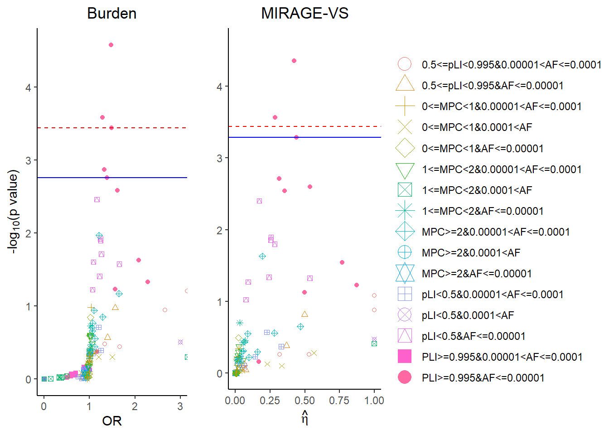

Variant set (VS) analysis for transmitted variants in ASC cell paper
##
## Attaching package: 'dplyr'## The following objects are masked from 'package:stats':
##
## filter, lag## The following objects are masked from 'package:base':
##
## intersect, setdiff, setequal, union##
## Attaching package: 'kableExtra'## The following object is masked from 'package:dplyr':
##
## group_rows##
## Attaching package: 'gplots'## The following object is masked from 'package:stats':
##
## lowess## -- Attaching packages ---------------- tidyverse 1.3.0 --## v ggplot2 3.3.1 v purrr 0.3.4
## v tibble 3.0.1 v stringr 1.4.0
## v tidyr 1.1.0 v forcats 0.4.0
## v readr 1.3.1## -- Conflicts ------------------- tidyverse_conflicts() --
## x dplyr::filter() masks stats::filter()
## x kableExtra::group_rows() masks dplyr::group_rows()
## x dplyr::lag() masks stats::lag()##
## Attaching package: 'gridExtra'## The following object is masked from 'package:dplyr':
##
## combine## Loading required package: magrittr##
## Attaching package: 'magrittr'## The following object is masked from 'package:purrr':
##
## set_names## The following object is masked from 'package:tidyr':
##
## extract## Joining, by = c("Variant", "FILTER", "VQSLOD", "GENE_NAME", "Consequence", "PCC_MAC", "MAC", "AN", "exac_AC", "exac_AN", "gnomad_AC", "gnomad_AN", "Transmitted_proband", "Untransmitted_proband", "Transmitted_sibling", "Untransmitted_sibling", "Transmitted_proband_male", "Untransmitted_proband_male", "Transmitted_proband_female", "Untransmitted_proband_female", "Transmitted_male_sibling", "Untransmitted_male_sibling", "Transmitted_female_sibling", "Untransmitted_female_sibling", "Missense", "PTV", "Inframe", "Indel", "pLI", "loftee", "loftee_flag", "MPC")Variant set formulation
Use same 6 variants groups in cell paper, stratify each variant group with AF cutoff, \(AF>10^{-4}, 10^{-4}>AF>10^{-5}, AF<10^{-5}\) (it seems the data is already filtered with \(AF>10^{-3}\)).
## Joining, by = "Variant"
## Min. 1st Qu. Median Mean 3rd Qu. Max.
## 0.000e+00 0.000e+00 8.245e-06 1.294e-05 1.696e-05 1.200e-03## [1] 18 2## transmitted untransmitted
## PLI>=0.995&0.0001<AF 0 0
## PLI>=0.995&0.00001<AF<=0.0001 21 29
## PLI>=0.995&AF<=0.00001 683 535
## 0.5<=pLI<0.995&0.0001<AF NA NA
## 0.5<=pLI<0.995&0.00001<AF<=0.0001 101 96
## 0.5<=pLI<0.995&AF<=0.00001 1172 1095
## pLI<0.5&0.0001<AF 6 10
## pLI<0.5&0.00001<AF<=0.0001 4794 4848
## pLI<0.5&AF<=0.00001 14159 13733
## MPC>=2&0.0001<AF 1 5
## MPC>=2&0.00001<AF<=0.0001 1561 1452
## MPC>=2&AF<=0.00001 4779 4702
## 1<=MPC<2&0.0001<AF 18 28
## 1<=MPC<2&0.00001<AF<=0.0001 17537 17621
## 1<=MPC<2&AF<=0.00001 32800 32720
## 0<=MPC<1&0.0001<AF 150 158
## 0<=MPC<1&0.00001<AF<=0.0001 139594 140220
## 0<=MPC<1&AF<=0.00001 199650 200111## Warning: `src_sqlite()` is deprecated as of dplyr 1.0.0.
## Please use `tbl()` directly with a database connection
## This warning is displayed once every 8 hours.
## Call `lifecycle::last_warnings()` to see where this warning was generated.Burden vs MIRAGE-VS
## $shape
## $title
## list()
## attr(,"class")
## [1] "waiver"
##
## $title.position
## NULL
##
## $title.theme
## NULL
##
## $title.hjust
## NULL
##
## $title.vjust
## NULL
##
## $label
## [1] TRUE
##
## $label.position
## NULL
##
## $label.theme
## NULL
##
## $label.hjust
## NULL
##
## $label.vjust
## NULL
##
## $keywidth
## NULL
##
## $keyheight
## NULL
##
## $direction
## NULL
##
## $override.aes
## $override.aes$size
## [1] 5
##
##
## $nrow
## NULL
##
## $ncol
## NULL
##
## $byrow
## [1] FALSE
##
## $reverse
## [1] FALSE
##
## $order
## [1] 0
##
## $available_aes
## [1] "any"
##
## $name
## [1] "legend"
##
## attr(,"class")
## [1] "guide" "legend"
##
## attr(,"class")
## [1] "guides"
This R Markdown site was created with workflowr